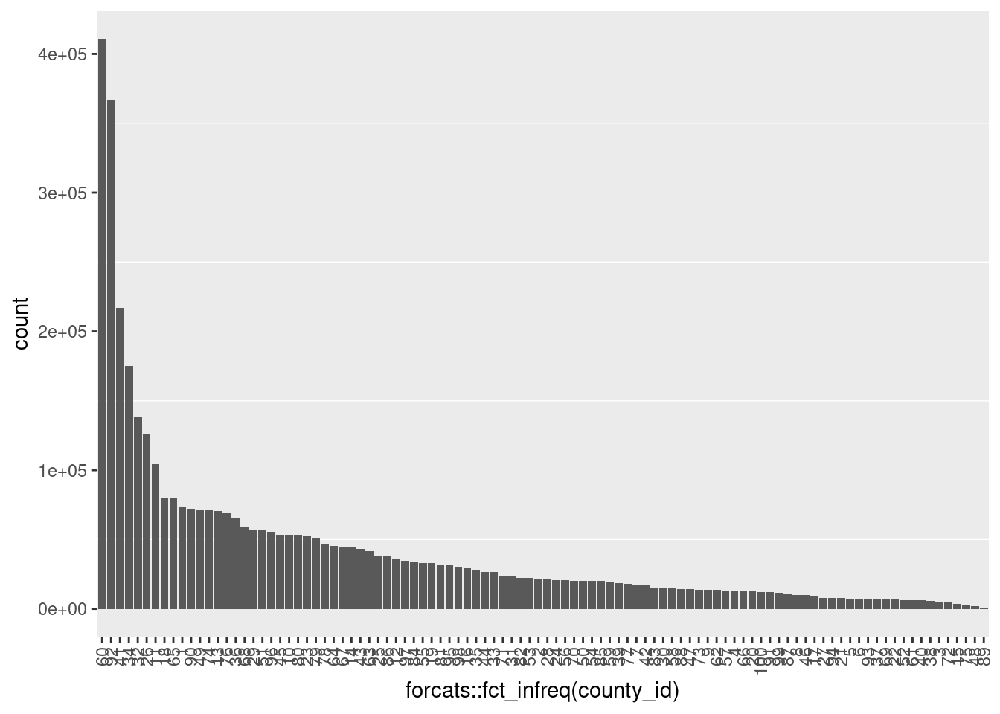
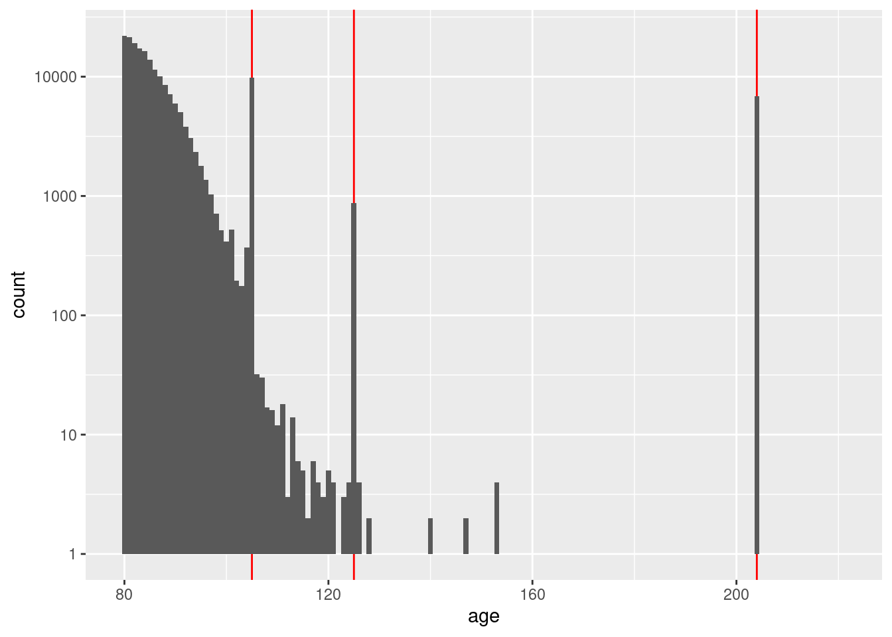
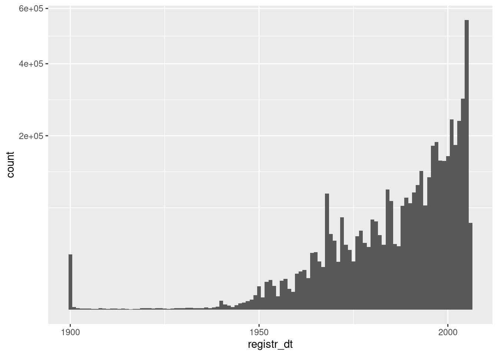
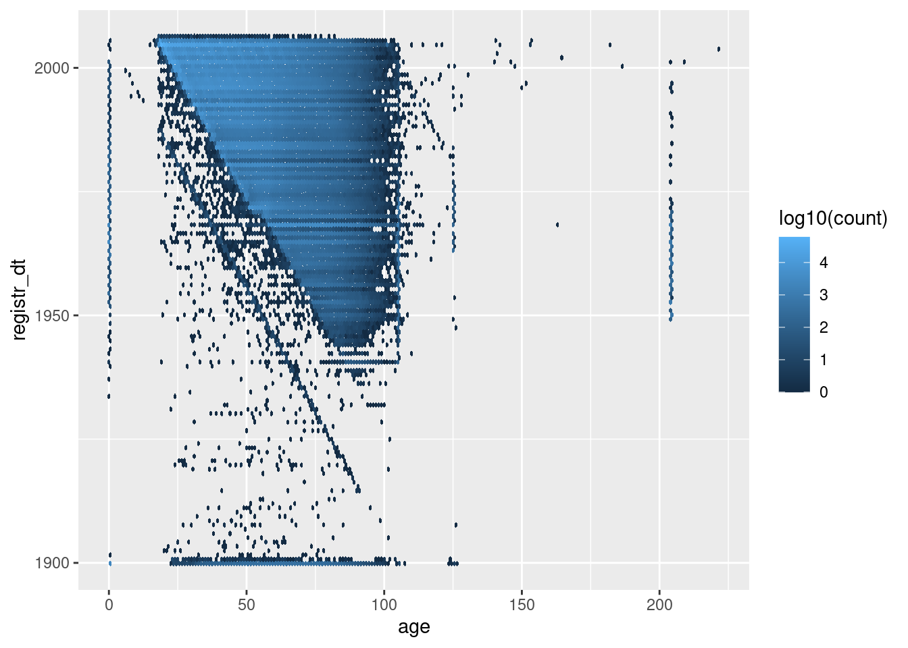
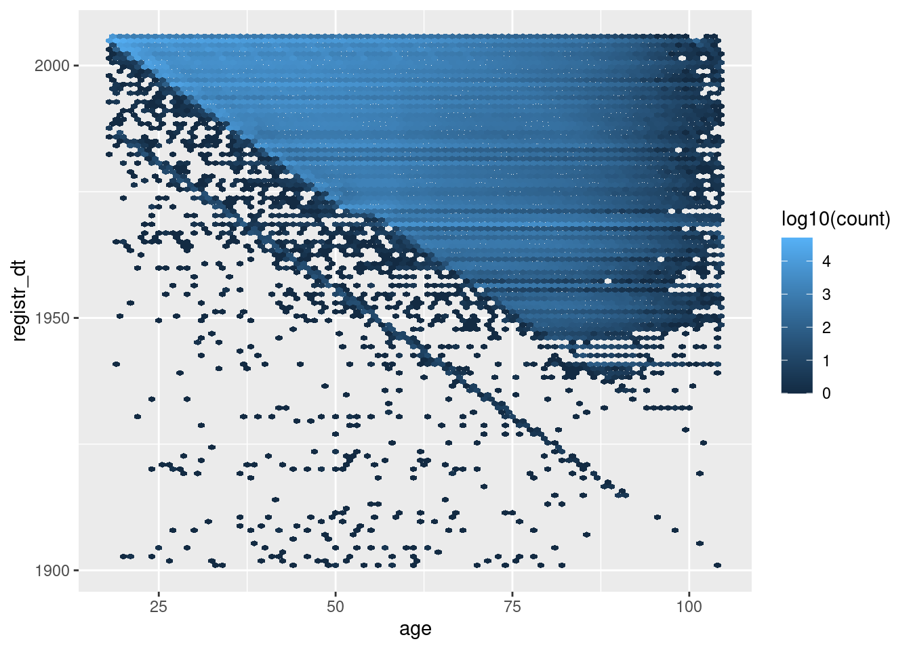
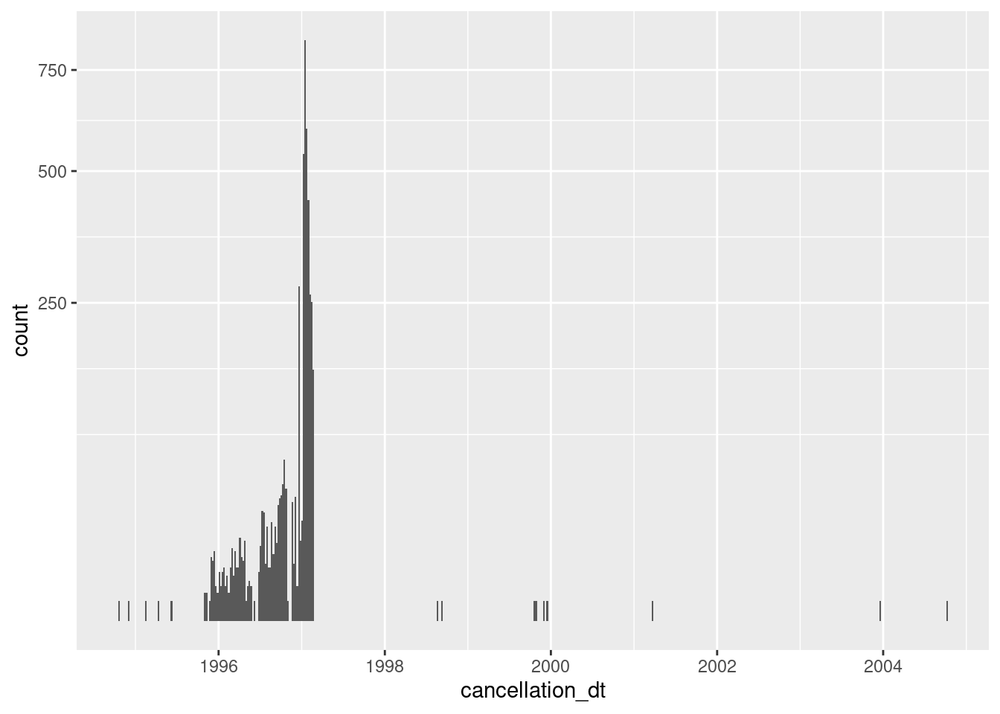

Last updated: 2021-01-12
Checks: 7 0
Knit directory:
fa_sim_cal/
This reproducible R Markdown analysis was created with workflowr (version 1.6.2). The Checks tab describes the reproducibility checks that were applied when the results were created. The Past versions tab lists the development history.
Great! Since the R Markdown file has been committed to the Git repository, you know the exact version of the code that produced these results.
Great job! The global environment was empty. Objects defined in the global environment can affect the analysis in your R Markdown file in unknown ways. For reproduciblity it’s best to always run the code in an empty environment.
The command set.seed(20201104) was run prior to running the code in the R Markdown file.
Setting a seed ensures that any results that rely on randomness, e.g.
subsampling or permutations, are reproducible.
Great job! Recording the operating system, R version, and package versions is critical for reproducibility.
Nice! There were no cached chunks for this analysis, so you can be confident that you successfully produced the results during this run.
Great job! Using relative paths to the files within your workflowr project makes it easier to run your code on other machines.
Great! You are using Git for version control. Tracking code development and connecting the code version to the results is critical for reproducibility.
The results in this page were generated with repository version 6469262. See the Past versions tab to see a history of the changes made to the R Markdown and HTML files.
Note that you need to be careful to ensure that all relevant files for the
analysis have been committed to Git prior to generating the results (you can
use wflow_publish or wflow_git_commit). workflowr only
checks the R Markdown file, but you know if there are other scripts or data
files that it depends on. Below is the status of the Git repository when the
results were generated:
Ignored files:
Ignored: .Rhistory
Ignored: .Rproj.user/
Ignored: .tresorit/
Ignored: data/VR_20051125.txt.xz
Ignored: output/ent_raw.fst
Ignored: renv/library/
Ignored: renv/staging/
Untracked files:
Untracked: analysis/01_get_check_data.Rmd.txt
Note that any generated files, e.g. HTML, png, CSS, etc., are not included in this status report because it is ok for generated content to have uncommitted changes.
These are the previous versions of the repository in which changes were made
to the R Markdown (analysis/01-2_check_admin.Rmd) and HTML (docs/01-2_check_admin.html)
files. If you’ve configured a remote Git repository (see
?wflow_git_remote), click on the hyperlinks in the table below to
view the files as they were in that past version.
| File | Version | Author | Date | Message |
|---|---|---|---|---|
| Rmd | 6469262 | Ross Gayler | 2021-01-12 | Add 01-2 check admin |
# Set up the project environment, because each Rmd file knits in a new R session
# so doesn't get the project setup from .Rprofile
# Project setup
library(here)
source(here::here("code", "setup_project.R"))── Attaching packages ─────────────────────────────────────── tidyverse 1.3.0 ──✓ ggplot2 3.3.3 ✓ purrr 0.3.4
✓ tibble 3.0.4 ✓ dplyr 1.0.2
✓ tidyr 1.1.2 ✓ stringr 1.4.0
✓ readr 1.4.0 ✓ forcats 0.5.0── Conflicts ────────────────────────────────────────── tidyverse_conflicts() ──
x dplyr::filter() masks stats::filter()
x dplyr::lag() masks stats::lag()# Extra set up for the 01*.Rmd notebooks
source(here::here("code", "setup_01.R"))
Attaching package: 'glue'The following object is masked from 'package:dplyr':
collapse# Extra set up for this notebook
# ???
# start the execution time clock
tictoc::tic("Computation time (excl. render)")The 01*.Rmd notebooks read the data, filter it to the subset to be
used for modelling, characterise it to understand it, check for possible
gotchas, clean it, and save it for the analyses proper.
This notebook (01-2_check_admin) characterises the “administrative”
variables in the saved subset of the data.
We don’t know any of the details on how the NCVR data is collected and processed, so our interpretations are only educated guesses. We have no intention of using the administrative variables as predictors for entity resolution. However, it’s possible that they may shed some light on data quality which might influence our choice of records to be used for modelling.
Define the “administrative” variables.
vars_admin <- c("county_id", "county_desc", "voter_reg_num", "registr_dt", "cancellation_dt") Read the usable data. Remember that this consists of only the ACTIVE & VERIFIED records.
# Show the entity data file location
# This is set in code/file_paths.R
f_entity_fst[1] "/home/ross/RG/projects/academic/entity_resolution/fa_sim_cal_TOP/fa_sim_cal/output/ent_raw.fst"# get data for next section of analyses
d <- fst::read_fst(
f_entity_fst,
columns = c(vars_admin, "age") # get age as well
) %>%
tibble::as_tibble()
dim(d)[1] 4099699 6county_id County identification number
county_desc County description
d$county_id %>% as.integer() %>% summary() Min. 1st Qu. Median Mean 3rd Qu. Max.
1.00 32.00 53.00 52.26 76.00 100.00 d$county_id %>% as.integer() %>% table(useNA = "ifany").
1 2 3 4 5 6 7 8 9 10 11
73306 21143 4918 13168 7173 6961 17568 10210 13784 53463 104267
12 13 14 15 16 17 18 19 20 21 22
35567 70738 44381 3705 29122 9133 79576 32989 12510 7680 6536
23 24 25 26 27 28 29 30 31 32 33
52398 20663 38552 125885 8088 21121 57337 15489 23944 138594 26494
34 35 36 37 38 39 40 41 42 43 44
175097 28263 65685 6698 5563 18650 6004 216993 17029 43012 26534
45 46 47 48 49 50 51 52 53 54 55
53679 9751 14111 1731 71218 20151 56868 6220 22278 20083 33012
56 57 58 59 60 61 62 63 64 65 66
20497 13246 15348 19581 410483 6219 13653 41542 45537 79484 12539
67 68 69 70 71 72 73 74 75 76 77
45043 59435 6660 20400 24078 4603 13915 71178 2774 68828 18084
78 79 80 81 82 83 84 85 86 87 88
46871 51491 53187 32070 22487 15589 33407 20027 38069 11069 14342
89 90 91 92 93 94 95 96 97 98 99
1027 72265 12357 367146 6907 7758 31233 55699 34655 30033 11410
100
12380 ggplot(d) +
geom_bar(aes(x = forcats::fct_infreq(county_id))) +
theme(panel.grid.major = element_blank(),
axis.text.x = element_text(angle = 90, hjust=1, vjust = 0.5)
)
Check that the county descriptions are in a 1-1 relationship with the county IDs.
d$county_desc %>% unique() %>% length()[1] 100paste(d$county_id, d$county_desc) %>% unique() %>% length()[1] 100(d$county_desc %>% unique() %>% length()) ==
(paste(d$county_id, d$county_desc) %>% unique() %>% length())[1] TRUEcounty_idThey look reasonable, to the extent that I can tell without knowing anything about the counties.
voter_reg_num Voter registration number (unique by county)
d$voter_reg_num %>% head()[1] "000000000001" "000000000001" "000000000001" "000000000001" "000000000001"
[6] "000000000001"d$voter_reg_num %>% tail()[1] "000099848837" "000099848838" "000099848840" "000099848841" "000099870963"
[6] "000401437666"d$voter_reg_num %>% unique() %>% length()[1] 1786064summary(as.integer(d$voter_reg_num)) Min. 1st Qu. Median Mean 3rd Qu. Max.
1 44722 223167 6670211 7629018 401437666 Check whether county_id \(\times\) voter_reg_num is unique, as
claimed.
# number of records
nrow(d)[1] 4099699# number of unique county_id x voter_reg_num combinations
paste(d$county_id, d$voter_reg_num) %>% unique() %>% length()[1] 4099699nrow(d) ==
(paste(d$county_id, d$voter_reg_num) %>% unique() %>% length())[1] TRUEcounty_id \(\times\) voter_reg_num is unique, as claimedregistr_dt Voter registration date
d$registr_dt %>% summary() Min. 1st Qu. Median Mean 3rd Qu. Max.
"1899-09-14" "1988-01-01" "1997-01-09" "1993-01-18" "2002-11-05" "9999-10-21" x <- d %>%
dplyr::filter(registr_dt > lubridate::ymd("2005-11-25")) # after snapshot date
nrow(x)[1] 18x %>%
dplyr::arrange(registr_dt) %>%
knitr::kable()| county_id | county_desc | voter_reg_num | registr_dt | cancellation_dt | age |
|---|---|---|---|---|---|
| 86 | SURRY | 000030004622 | 2007-08-15 | NA | 23 |
| 36 | GASTON | 000007601045 | 2007-10-12 | NA | 56 |
| 36 | GASTON | 000007600410 | 2008-10-05 | NA | 35 |
| 36 | GASTON | 000007600823 | 2008-10-05 | NA | 30 |
| 36 | GASTON | 000007600617 | 2008-10-11 | NA | 23 |
| 98 | WILSON | 000057476091 | 2011-06-11 | NA | 80 |
| 21 | CHOWAN | 000000014190 | 2022-09-04 | NA | 34 |
| 56 | MACON | 000000034702 | 2201-06-12 | NA | 72 |
| 79 | ROCKINGHAM | 000000102698 | 2201-09-18 | NA | 39 |
| 17 | CASWELL | 000000021711 | 2201-11-28 | NA | 25 |
| 68 | ORANGE | 000000196807 | 2801-11-01 | NA | 24 |
| 98 | WILSON | 000057476878 | 3001-09-25 | NA | 26 |
| 98 | WILSON | 000057476124 | 3663-06-25 | NA | 24 |
| 64 | NASH | 000000068243 | 5113-08-07 | NA | 22 |
| 69 | PAMLICO | 000006450688 | 7614-03-05 | NA | 22 |
| 14 | CALDWELL | 000014470774 | 8480-10-09 | NA | 52 |
| 87 | SWAIN | 000000001209 | 9482-03-11 | NA | 42 |
| 1 | ALAMANCE | 000009066908 | 9999-10-21 | NA | 24 |
Never missing
18 records have registration date after the snapshot date
Some records have early registration dates
Investigate the early registration dates. First form a view on how early is too early by finding the maximum age and assuming registration at 21 years of age.
d$age %>% as.integer() %>% summary() Min. 1st Qu. Median Mean 3rd Qu. Max.
0.00 33.00 45.00 46.93 58.00 221.00 d$age %>% as.integer() %>% quantile(probs = c(0.003, 0.004, 0.995, 0.996, 0.997, 0.998, 0.999)) 0.3% 0.4% 99.5% 99.6% 99.7% 99.8% 99.9%
0 18 98 105 105 105 204 d %>%
dplyr::mutate(age = as.integer(age)) %>%
dplyr::filter(age >= 80) %>%
ggplot() +
geom_vline(xintercept = c(105, 125, 204), colour = "red") +
geom_histogram(aes(x = age), binwidth = 1) +
scale_y_log10()Warning: Transformation introduced infinite values in continuous y-axisWarning: Removed 79 rows containing missing values (geom_bar).
That just opened another can of worms. Without considering age in
detail, it appears that the maximum accurate age is not more than 120
years.
Assume that the maximum possible voter age is 116 years. The minimum registration age in North Carolina is 16 years (although I have no idea what it was 100 years ago). Therefore, assume that the oldest possible voter could have registered 100 years prior to the snapshot date. That is, regard any registration earlier than 1905-11-25 as very unlikely to be correct.
Now look at the distribution of registration dates that are no later than the snapshot date.
d %>%
dplyr::filter(registr_dt <= lubridate::ymd("2005-11-25")) %>%
ggplot() +
geom_histogram(aes(x = registr_dt), binwidth = 365.25) + # 1yr bins
scale_y_sqrt()
Look at the relationship between age and registration date.
First look at all the records (excluding those with registration date after the snapshot date).
d %>%
dplyr::mutate(age = as.integer(age)) %>%
dplyr::filter(registr_dt <= lubridate::ymd("2005-11-25")) %>%
ggplot() +
geom_hex(aes(x = age, y = registr_dt, fill = stat(log10(count))), binwidth = c(1, 365.25)) # 1yr bins x&y
Now exclude the manifestly weird regions.
d %>%
dplyr::mutate(age = as.integer(age)) %>%
dplyr::filter(
dplyr::between(registr_dt, lubridate::ymd("1901-01-01"), lubridate::ymd("2005-11-25")),
dplyr::between(age, 18, 104)
) %>%
ggplot() +
geom_hex(aes(x = age, y = registr_dt, fill = stat(log10(count))), binwidth = c(1, 365.25)) # 1yr bins x&y
The blue’ish upper triangle corresponds to people who were at least 18 years old at registration.
The black fringe below the blue-ish upper triangle corresponds to people who were less that 18 years old at registration.
The negative diagonal line corresponds to people who would have been zero years old at registration.
The points below the negative diagonal line correspond to people who appear to have been registered before they were born.
Most registration dates are consistent with age
A significant fraction of registration dates are inconsistent with age.
cancellation_dt Cancellation date
d$cancellation_dt %>% summary() Min. 1st Qu. Median Mean 3rd Qu. Max.
"1994-10-18" "1996-12-30" "1997-01-16" "1996-12-22" "1997-01-27" "2004-10-05"
NA's
"4095558" table(missing = is.na(d$cancellation_dt))missing
FALSE TRUE
4141 4095558 table(missing = is.na(d$cancellation_dt)) %>% prop.table() %>% round(3)missing
FALSE TRUE
0.001 0.999 x <- d %>%
dplyr::filter(!is.na(cancellation_dt)) # not missing
x %>%
ggplot() +
geom_histogram(aes(x = cancellation_dt), binwidth = 7) + # 1wk bins
scale_y_sqrt()
It is not clear what having a cancellation date means for records that are flagged as ACTIVE & VERIFIED. Perhaps they had been removed from the electoral roll in the past and subsequently reinstated.
Computation time (excl. render): 33.991 sec elapsed
sessionInfo()R version 4.0.3 (2020-10-10)
Platform: x86_64-pc-linux-gnu (64-bit)
Running under: Ubuntu 20.10
Matrix products: default
BLAS: /usr/lib/x86_64-linux-gnu/blas/libblas.so.3.9.0
LAPACK: /usr/lib/x86_64-linux-gnu/lapack/liblapack.so.3.9.0
locale:
[1] LC_CTYPE=en_AU.UTF-8 LC_NUMERIC=C
[3] LC_TIME=en_AU.UTF-8 LC_COLLATE=en_AU.UTF-8
[5] LC_MONETARY=en_AU.UTF-8 LC_MESSAGES=en_AU.UTF-8
[7] LC_PAPER=en_AU.UTF-8 LC_NAME=C
[9] LC_ADDRESS=C LC_TELEPHONE=C
[11] LC_MEASUREMENT=en_AU.UTF-8 LC_IDENTIFICATION=C
attached base packages:
[1] stats graphics grDevices datasets utils methods base
other attached packages:
[1] hexbin_1.28.2 glue_1.4.2 knitr_1.30 skimr_2.1.2
[5] fst_0.9.4 forcats_0.5.0 stringr_1.4.0 dplyr_1.0.2
[9] purrr_0.3.4 readr_1.4.0 tidyr_1.1.2 tibble_3.0.4
[13] ggplot2_3.3.3 tidyverse_1.3.0 tictoc_1.0 here_1.0.1
[17] workflowr_1.6.2
loaded via a namespace (and not attached):
[1] Rcpp_1.0.5 lattice_0.20-41 lubridate_1.7.9.2 assertthat_0.2.1
[5] rprojroot_2.0.2 digest_0.6.27 repr_1.1.0 R6_2.5.0
[9] cellranger_1.1.0 backports_1.2.1 reprex_0.3.0 evaluate_0.14
[13] highr_0.8 httr_1.4.2 pillar_1.4.7 rlang_0.4.10
[17] readxl_1.3.1 rstudioapi_0.13 whisker_0.4 rmarkdown_2.6
[21] labeling_0.4.2 munsell_0.5.0 broom_0.7.3 compiler_4.0.3
[25] httpuv_1.5.4 modelr_0.1.8 xfun_0.20 base64enc_0.1-3
[29] pkgconfig_2.0.3 htmltools_0.5.0 tidyselect_1.1.0 bookdown_0.21
[33] fansi_0.4.1 crayon_1.3.4 dbplyr_2.0.0 withr_2.3.0
[37] later_1.1.0.1 grid_4.0.3 jsonlite_1.7.2 gtable_0.3.0
[41] lifecycle_0.2.0 DBI_1.1.0 git2r_0.28.0 magrittr_2.0.1
[45] scales_1.1.1 cli_2.2.0 stringi_1.5.3 farver_2.0.3
[49] renv_0.12.5 fs_1.5.0 promises_1.1.1 xml2_1.3.2
[53] ellipsis_0.3.1 generics_0.1.0 vctrs_0.3.6 tools_4.0.3
[57] hms_0.5.3 parallel_4.0.3 yaml_2.2.1 colorspace_2.0-0
[61] rvest_0.3.6 haven_2.3.1